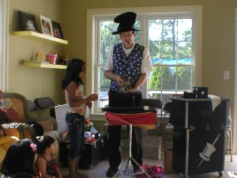

Dana Holleran, a New Hampshire magician, has been performing magic for over 40 years, and he currently resides in Manchester, New Hampshire. Dana enjoys performing comedy stage routines for children and adults with a production of a live rabbit as the finale for each show. Dana also enjoys performing close up magic in strolling situations or one on one specializing in entertaining and baffling sleight of hand close up magic. Dana mostly performs at children’s birthday parties, but also has performed in many other venues.
Dana Holleran, a New Hampshire magician, has been performing magic for over 40 years, and he currently resides in Manchester, New Hampshire. Dana enjoys performing comedy stage routines for children and adults with a production of a live rabbit as the finale for each show. Dana also enjoys performing close up magic in strolling situations or one on one specializing in entertaining and baffling sleight of hand close up magic. Dana mostly performs at children’s birthday parties, but also has performed in many other venues.
“Houdana” started as a magician by purchasing his first magic effect at Al Cohen’s magic shop in Washington DC. After that first purchase, Dana was hooked and continued purchasing magic with his father. While in college, Dana joined Ring 103 after meeting Earl Edwards who had a magic shop in Norfolk VA. While in college, Dana mostly performed for his college friends and family members while at home for the summer.
After college, Dana returned to the Washington DC area and joined Ring 50. Dana performed mostly for children’s birthday parties after advertising in the newspaper, but also performed stage shows for various venues including a prison, a juvenile detention home, senior citizen homes, schools, McDonalds, and at a park for their Halloween festivities.
About 20 years ago, Dana was relocated to West Virginia because of his job and joined Ring 197. While in the Parkersburg area, Dana performed mostly for children events including birthday parties, social events, blue and gold banquets, Christmas parties, and some schools. His wife joined him by making balloon animals for the children. Dana also performed close up magic for a few restaurants.
Several years ago, Dana moved to Manchester, NH after retiring and joined Ring 166. Dana has continued performing his stage magic for mostly children’s birthday parties and day care centers, but has performed at some interesting locations including close up magic in Cape Cod.
Houdana currently can be seen every Wednesday at Harold Square Restaurant.

